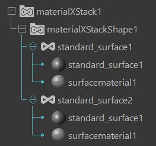
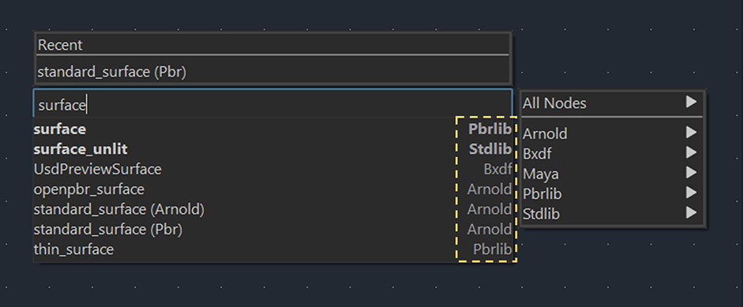

LookdevX for Maya v1.3.0 Release Notes
LookdevX 1.3.0 introduces a variety of new features and a range of UX improvements.
Release Highlights
Support for both USD and MaterialX shading graphs
You can now use native USD and native MaterialX shading graphs simultaneously within the same Maya session. You can choose which data model to use from either the start screen of the LookdevX Graph Editor or when creating a new graph tab. You will also see a label in the node graph that displays the current data model.

MaterialX data structures
When you create a MaterialX material, Maya automatically creates the corresponding data structures, MaterialX Stack and MaterialX Document, which you can view in the Outliner. MaterialX Stack serves as a container for MaterialX Documents, which is where the materials are stored. You can create, import or export a MaterialX Stack or Document. You can also reference a MaterialX Stack.

Assign MaterialX materials directly to Maya geometry
You can now right-click to assign a MaterialX material to Maya geometry in both the Outliner and LookdevX Graph Editor.

Nodes identified with library names in the Tab menu
In the Graph Editor Tab menu, each node now displays the name of the library from which it is sourced. You can easily identify and select nodes based on their specific libraries.

Toolbar
This update introduces a new toolbar that provides easy access to frequently used actions, including Show/Clear selected materials, Collapse/Expand all nodes, and Clear Solo.

Usability updates: promoting/demoting attributes
You can now promote or demote an attribute to the input or output node with a simple right-click.

What's Fixed
| Performance issue with Image nodes LOOKDEVX-2363 |
| [MTLX] Error deleting component connection inside a compound LOOKDEVX-2388 |
| [MTLX] Special characters in the Mtlx file name crashes Maya LOOKDEVX-2105 |
| Refresh issue with making component connections inside a compound LOOKDEVX-2158 |
| Copy with connection does not work on nodes with component connection. LOOKDEVX-2024 |
| [MTLX] Add missing matrix support LOOKDEVX-2414 |
| [MTLX] Material assignment breaks on undo delete stack. LOOKDEVX-2351 |
| Crash with Undo/Redo after exploding material node graph LOOKDEVX-2297 |
| [MTLX] MaterialX transparency looks wrong in VP2 LOOKDEVX-2266 |
| Hotkeys missing for Duplicate options in the node context menu LOOKDEVX-2460 |
| Exploding compound creates an error in the script editor LOOKDEVX-1933 |
| [MTLX] Exporting existing document should ask the user if they want to replace it LOOKDEVX-2393 |
| [MTLX] Renaming node with special characters crashes Maya LOOKDEVX-2070 |
| [MTLX] Arnold soloing for non surface shader nodes LOOKDEVX-2389 |
| [MTLX] Assign Material to Selection should be greyed out when nothing is selected LOOKDEVX-2432 |
| Right-clicking on tool bar displays option to enable/disable toolbar LOOKDEVX-2166 |
| Published compounds are losing their groups LOOKDEVX-453 |
| [MTLX] User can Drag and Drop a folder in Filename parameter LOOKDEVX-2137 |
| UI Linux: About Box is stuck in the center of your monitor and can't be moved LOOKDEVX-1238 |
| Compound output port order is reversed LOOKDEVX-1899 |
| Input ports are missing when duplicating a compound. LOOKDEVX-1125 |
| Wrapping a node connected to a surface material loses the surfacematerial type LOOKDEVX-2261 |
| [MTLX] Moving material nodes in the outliner crashes Maya LOOKDEVX-2201 |
| [Compound] Promoting enum string port results in a basic string LOOKDEVX-2449 |
| crash when querying MaterialXSurfaceShader.renderDocument plug pointing to deleted material LOOKDEVX-2404 |
| [MTLX] Redo does not work properly with Backdrops LOOKDEVX-2077 |
| [MTLX] Renaming node connected to output of NodeGraph doesn't update the connection LOOKDEVX-1998 |
| MaterialX surface: incrementing the resync counter should also increment update LOOKDEVX-2394 |
| Material will not appear in the graph after doing an undo then a redo LOOKDEVX-1887 |
| [MTLX] Crash with Input to output connection LOOKDEVX-2440 |
| VNN: While dragging a wire, Groups of Parameters are not highlighted (while simple attributes are) LOOKDEVX-1357 |
| List pasted clipboard items in the script editor LOOKDEVX-1923 |
| [MTLX] Unable to copy/paste empty materialx document LOOKDEVX-2317 |
| Crash when renaming imported mtlx nodes LOOKDEVX-2230 |
| Need to regraph materials after a save on disk to apply changes LOOKDEVX-918 |
| Soloing node inside a compound create an error LOOKDEVX-2337 |
| Duplicate with connection does not work on nodes with component connection LOOKDEVX-1930 |
| Deleting a solo'd shader node retains the solo connection to the output node LOOKDEVX-2104 |
| Crash when deleting a mtl scope containing solo'd node LOOKDEVX-1968 |
| [MTLX] PE opens the native file explorer instead of the Maya one LOOKDEVX-2002 |
| [MTLX] Crash opening a scene file with hidden nodes visible in the outliner LOOKDEVX-2428 |
| Show in LookdevX context action not exposed in Primitive Geom Prims LOOKDEVX-1337 |
| [MTLX] Errors when assigning MaterialX surface_material to geo LOOKDEVX-2265 |
| Capitalized compound port names does not get displayed properly in the Parameter editor LOOKDEVX-2361 |
| [MTLX] Bulk copy/pasting does not work if the node names are similar LOOKDEVX-2325 |
| [MTLX] Loading mtlx file with empty file name crashes Maya LOOKDEVX-2087 |
| [Compounds] Creating a compound on nodes with component connections comes disconnected LOOKDEVX-1898 |
| LookdevX's Graph Icon should be with the other rendering editor LOOKDEVX-902 |
| [MTLX] Undoing material assignment crashes. LOOKDEVX-2344 |
| VNN: Backdrop creation should consider expanded node size when defining backdrop borders LOOKDEVX-1403 |
| [MTLX] Promoting port crashes Maya LOOKDEVX-2194 |
| Right-click on input node port crashes Maya LOOKDEVX-2106 |
| Deactivating prim removes it from the outliner when LookdevX is loaded LOOKDEVX-2451 |
| Crash when exploding compound with component connection LOOKDEVX-2526 |
| Working with two data models at the same time lead to crash LOOKDEVX-2437 |
| LookdevX graph tool bar "Clear solo" tool tip is wrong LOOKDEVX-2240 |
| [MTLX] Crash when undo/redo multiple mtlx imports LOOKDEVX-2231 |
| [MTLX] Maya crashes upon grouping a MaterialX document stack. LOOKDEVX-2044 |
| [MTLX] Inputs should either have a value or a connection, not both. LOOKDEVX-1996 |
| error thrown anytime user right-clicks on USD object if LookdevX Editor is closed LOOKDEVX-1510 |
| [Component connection] Combine node gets saved outside the compound LOOKDEVX-2027 |
| [MTLX] Enum attributes does not get promoted LOOKDEVX-2321 |
| Crash when making node connection with LookdevX and Script Editor window docked LOOKDEVX-1959 |
| [MTLX] Separate and Combine nodes visible in Outliner with MaterialX runtime LOOKDEVX-2276 |
| [MTLX] Maya crashes when cut/copying nodes LOOKDEVX-2103 |
| [MTLX] Make Undo DeleteNode work with nodes in compounds LOOKDEVX-1871 |
| Node browser entries can show the wrong subgroup LOOKDEVX-2319 |
| [MTLX] Changing node type and undoing does not bring back the connection LOOKDEVX-2387 |
| Graph: Unknown symbol in the place of hotkey for rename LOOKDEVX-1474 |
| User can Drag and Drop a folder in Filename parameter LOOKDEVX-1393 |
| [MTLX] Undoing compound creation action disconnects connection between nodes LOOKDEVX-2253 |
| Nodes get created at the origin if there are a component connections LOOKDEVX-2156 |
| Deleting and Graphing Material in the editor crashes Maya LOOKDEVX-1496 |
| Refresh issue with deleting promoted component connections LOOKDEVX-1824 |
| [MTLX] Improve connectivity detection for Clipboard utility function. LOOKDEVX-2280 |
| Typeless nodes are listed with wrong name in tab menu (MaterialX) LOOKDEVX-1883 |
| Divider on top and bottom of Outliner's context menu LOOKDEVX-2109 |
| Promote port to material operation message displays tab name in the script editor LOOKDEVX-2174 |
| MaterialX delete node undo does not restore downstream nodegraph connections LOOKDEVX-1835 |
| [Typeless] Changing node type fails to convert values LOOKDEVX-2443 |
| [MTLX] Material assignment breaks on undo delete MaterialX document LOOKDEVX-2390 |
| Demoting output port crashes Maya (Component Connections) LOOKDEVX-2216 |
| softmin and softmax metadata is not retrieved correctly. LOOKDEVX-2333 |
| Integrate MayaUSD fix: Error when changing color space of a normal texture map LOOKDEVX-2366 |
| "Show in file explorer" always disabled for UDIM files LOOKDEVX-2096 |
| [Customize UI] Setting Min/max value in the compound does not work LOOKDEVX-1922 |
| MaterialX: Graphs that use free floating outputs crash LookdevX LOOKDEVX-2347 |
| Demoting port from output node breaks other connections LOOKDEVX-2338 |
| [Component connection] Color picker swatch shows incorrect values LOOKDEVX-2251 |
| VP2 : All Lights Toggle is required to display color4 properly LOOKDEVX-839 |
| [MTLX] "Export Document in MaterialX Stack" should default to Maya save location LOOKDEVX-2398 |
| [MTLX] Implement graph validation LOOKDEVX-2331 |
| [MTLX] Crash when drag&dropping image in mateiralx context LOOKDEVX-2318 |
| Cannot connect output component port to multiple components of the same port LOOKDEVX-1931 |
| Crash with MaterialX transform nodes LOOKDEVX-2354 |
| ND_surface_unlit node creates shader compilation error in VP LOOKDEVX-2163 |
| Fix gaudy error color for Color Space field LOOKDEVX-1497 |
| [MTLX] Compound creation should not be allowed when the selections includes a compound LOOKDEVX-2052 |
| [MTLX] Printing mtlx documents to editor shows a nested document LOOKDEVX-2072 |
| Handle the unique child naming scheme change from MayaUSD LOOKDEVX-1912 |
| Exploding compound disconnects shader connection to output node LOOKDEVX-1905 |
| Drag and drop images on root level should display appropriate warning LOOKDEVX-1459 |
| Graph : Create Graph button returns an error and fails LOOKDEVX-1088 |
| [MTLX] Surfacematerial node cannot be grouped or created inside a compound LOOKDEVX-2101 |
| [MTLX] Topology handler error on undo explode. LOOKDEVX-2350 |
| Attempting to assign same material to prims on different USD stage crashes Maya LOOKDEVX-1495 |
| A compound input should inherit it's softmin/softmax values from the node input being connected to. LOOKDEVX-1020 |
| Crash when opening the Edit menu on the welcome screen. LOOKDEVX-2283 |
| [MTLX] Undoing the deletion of a node messes up types of connected ports. LOOKDEVX-2357 |
| Prevent Crash from Tangent reader connection with object space LOOKDEVX-2352 |
| Graph : Duplicating a node still selects the previous connection LOOKDEVX-999 |
| Changing colorspace using filetexture node does not update VP LOOKDEVX-2047 |
| [MTLX] Reordering document crashes Maya LOOKDEVX-2225 |
| [MTLX] MaterialX document stack does not get saved with Maya LOOKDEVX-2046 |
| Linux: LookdevX fails to install and load if previous version (1.2.0) is already installed in the machine. LOOKDEVX-2476 |
| syntax error when LookdevX plugin is loaded and you access the Windows menu twice LOOKDEVX-1262 |
| [MTLX] Ungrouping port does not work LOOKDEVX-2055 |
| Fix bug with creating a compound from half a component connection. LOOKDEVX-2277 |
| Shader gets stuck in error mode when assigning materialX surface material to geo LOOKDEVX-2248 |
| Tab menu shows up empty on the material level LOOKDEVX-2076 |
| Node browser entries can show the wrong subgroup LOOKDEVX-2439 |
| [MTLX] Export Documents in MaterialX stack should be disabled when its empty LOOKDEVX-2395 |
| "Show in LookdevX" and "Show All in LookdevX" menus appearing when they shouldn't LOOKDEVX-1383 |
| [MTLX] Error when making and removing component connections LOOKDEVX-2448 |
| [MTLX] Component connections aren't deleted correctly when a node is deleted. LOOKDEVX-2421 |
| [MTLX] Image nodes file port showing wrong type LOOKDEVX-2376 |
| LookdevX does not load on Maya Creative due to ADSK_PLUGIN_SIGNATURE LOOKDEVX-2294 |
| Error when creating Backdrops on root level LOOKDEVX-1427 |
| [MTLX] Redo material assignment crashes after undo & redo of material creation. LOOKDEVX-2349 |
| MTLX : Noise3D's color range is not properly displayed in the VP LOOKDEVX-1202 |
| [MTLX] Crash when making component connection on the surfacematerial node LOOKDEVX-2434 |
| [MTLX]Soloing gltf_colorimage node and creating compound displays black shader LOOKDEVX-2298 |
| Warning should be displayed when using shaders not supported in VP LOOKDEVX-2342 |
| [MTLX] Type not stored in nodegraph elements when connecting to non ufe types LOOKDEVX-2285 |
| Clicking edit menu in the Lookdevx graph crashes Maya LOOKDEVX-2279 |
| Rename a port when connected to a node is unstable LOOKDEVX-2007 |
| Remove light listings from the tab menu LOOKDEVX-2444 |
| [MTLX] Crash when making component connection on the surfacematerial node LOOKDEVX-2423 |
| UI: Node Collapsing options are displaying "%1" LOOKDEVX-822 |
| MaterialX surface crash when tweaking textured material LOOKDEVX-2237 |
| [Compound] Promote port option should be remove from the Input/output node LOOKDEVX-2161 |
| Compound output node Solo button bug LOOKDEVX-2067 |
| [Compound] Right-Click > Promote attributes changes default values of the node LOOKDEVX-2120 |
| [MTLX] Redo set value fails after undo/redo of node creation. LOOKDEVX-2346 |
| Infinite levels when library name matches the group name LOOKDEVX-2320 |
| Making component connections should disconnect its group port connection LOOKDEVX-2157 |
| Nodes in the graph don't remove automatically the error border/highlight LOOKDEVX-2019 |
| Replace "OpenUSD" with "USD" and use grayscale icons. LOOKDEVX-1910 |
| Mac: LookdevX fails to install and load if previous version (1.2.0) is already installed in the machine. LOOKDEVX-2558 |
| [MTLX] Loading a document does not display it. LOOKDEVX-2159 |
| LookdevX hides child prims in USD hierarchy LOOKDEVX-2525 |
| Undo clear selection fails after rename. LOOKDEVX-2198 |
| [MTLX] Crash when creating compound LOOKDEVX-1986 |
| [MTLX] Crash when right-clicking on the materialx nodes in the outliner LOOKDEVX-2284 |
| [MTLX] Export of documents reports success even if it failed. LOOKDEVX-2322 |
| [MTLX] UNDO does work properly with port groups LOOKDEVX-2054 |
| Deleting a node inbetween a shading tree and Undoing it crashes Maya LOOKDEVX-2379 |
| Changing node type breaks some of the parameter default setting LOOKDEVX-1997 |
| [MTLX] Add character limit to the node names in the tab menu LOOKDEVX-2328 |
| [MTLX] Duplicating materialXstack crashes Maya LOOKDEVX-2316 |
| Graph : Sub-component can still be exposed. LOOKDEVX-1105 |
| Nodes in the graph don't update automatically the error border/highlight LOOKDEVX-1921 |
| Empty over class is left behind when deleting a node. LOOKDEVX-856 |
| Compound nodes does not get created at predictable location LOOKDEVX-1550 |
| Component connections does not work with custom mtlx nodes LOOKDEVX-2034 |
| Prevent menu entry for creating Backdrops on root level LOOKDEVX-1479 |
| Crash adding 2 nodes to a nested Compound LOOKDEVX-1981 |
| Infinite levels when library name matches the group name LOOKDEVX-2438 |
| Missing solo flag on Arnold nodes LOOKDEVX-2336 |
| Creating compound on solo'd node crashes Maya LOOKDEVX-2056 |
| Enter triggers both the lookdevX graph and the outliner LOOKDEVX-900 |
| Deactivating prim removes it from the outliner when LookdevX is loaded LOOKDEVX-2402 |
| Compound: Ports pop-up for a second when renaming top-level parameters LOOKDEVX-1307 |
| [MTLX] MaterialX node names should not be allowed to start with a digit LOOKDEVX-2051 |
| Surface node does not react to NodeGraph boundary changes LOOKDEVX-2293 |
| [MTLX] Children of a Document don't show up as expected. LOOKDEVX-2186 |
Known Limitations
| MaterialX: BSDF/EDF ports incorrectly wrapped as Ufe::AttributeString LOOKDEVX-2409 |
| Changing node type should retain the node parameter default values LOOKDEVX-2102 |
| [MTLX] Performance issue with grouping image node LOOKDEVX-2405 |
| Texture appears lighter (in color) when initially created in the viewport. LOOKDEVX-2300 |
| All tools in the tool bar should be displayed in the graph welcome screen LOOKDEVX-2167 |
| [MTLX] Undo/Redo does not retain the node location in the graph LOOKDEVX-2362 |
| [MTLX] Component connections aren't deleted correctly when a node is deleted. LOOKDEVX-2378 |
| Error when opening a file with wrong data model tab active in LookdevX graph LOOKDEVX-2364 |
| [MTLX] Solo is retained even after a new session LOOKDEVX-2411 |
| Refresh issue in VP with MaterialX fractal3d nodes LOOKDEVX-2360 |
| [Linux] Two LookdevX paths in the plugin manager LOOKDEVX-2516 |
| Hide Input and Output node from tab search menu LOOKDEVX-2418 |
| The combine and separate nodes should be presented as typeless LOOKDEVX-2371 |
| IntelMac - Crash when trying to access the file browser from the Image nodes LOOKDEVX-2485 |
| Issue with Undo after deleting solo'd shader inside a compound LOOKDEVX-2410 |
| Connections on Input node ports are reversed inside nested compound LOOKDEVX-2136 |
| Frame Selection/All weird behavior LOOKDEVX-2327 |
| [MTLX] Relative path does not work after saving and referencing the Mtlx file LOOKDEVX-2199 |
| [MTLX] Nodes appear in the origin after UNDO/REDO LOOKDEVX-2121 |
| Promoted file port remains active LOOKDEVX-2413 |
| [LOOKDEVXUSD] Relative path options are missing in the file browser UI LOOKDEVX-2358 |
| IntelMac - Unable to create nodes in the Materialx graph LOOKDEVX-2484 |
| USD TabMenu displays two homonym entries LOOKDEVX-2462 |
| If Arnold nodes are used to load UDIM files with relative paths, the paths have to be set as relative to the Arnold render settings. A workaround is to use the "usduvtexture" node which allows paths to be relative to the asset. MTOA-1795 |